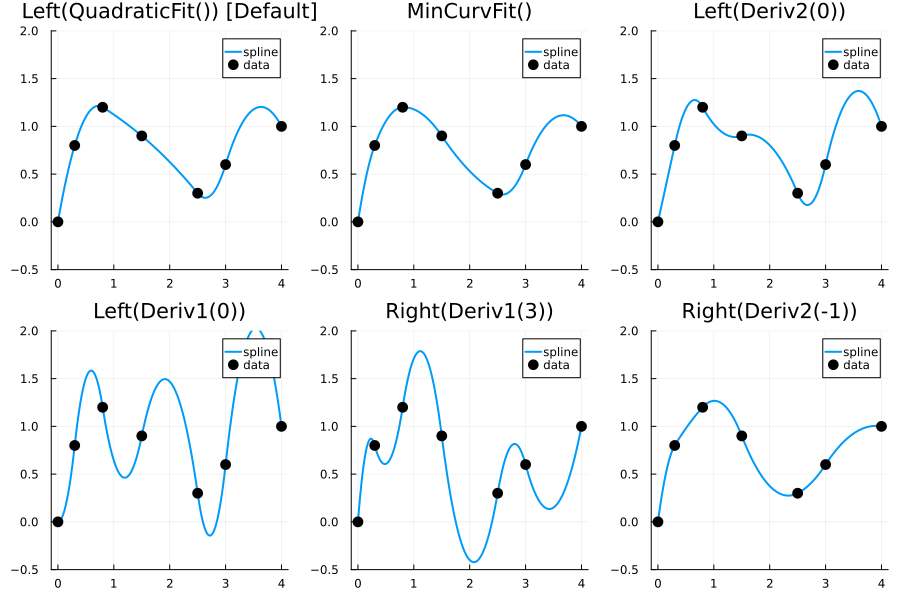

Quadratic Interpolation
C¹-continuous spline interpolation with smooth first derivatives.
Key Feature: Single-endpoint boundary condition — specify constraint at only one end.
| BC | Description |
|---|---|
Left(QuadraticFit()) | 3-point parabola fit at left (Default) |
Right(QuadraticFit()) | 3-point parabola fit at right |
Left(Deriv1(v)) | S'(left) = v |
Left(Deriv2(v)) | S''(left) = v |
Right(Deriv1(v)) | S'(right) = v |
Right(Deriv2(v)) | S''(right) = v |
MinCurvFit() | Minimize total curvature (globally smooth) |
Default: Left(QuadraticFit()) — exact for quadratic polynomials.
👉 See Boundary Conditions Overview for the complete BC type hierarchy and detailed explanations.
Usage
using FastInterpolations
x = range(0.0, 2π, 15)
y = sin.(x)
# One-shot evaluation (default: QuadraticFit - exact for polynomials)
quadratic_interp(x, y, 1.0) # default BC
quadratic_interp(x, y, 1.0; bc=Left(Deriv1(1.0))) # S'(left) = 1.0
quadratic_interp(x, y, 1.0; bc=MinCurvFit()) # minimize curvature
# In-place evaluation (zero allocation)
xq = range(x[1], x[end], 200)
out = similar(xq)
quadratic_interp!(out, x, y, xq)
# Create reusable interpolant
itp = quadratic_interp(x, y; bc=Left(Deriv2(0.0)))
itp(1.0) # evaluate at single point
itp(xq) # evaluate at multiple points
# Derivatives
quadratic_interp(x, y, 1.0; deriv=DerivOp(1)) # continuous first derivative
d1 = deriv1(itp); d1(1.0) # same via interpolant
d2 = deriv2(itp); d2(1.0) # piecewise constant- Default
QuadraticFit(): Best for polynomial-like data (exact for quadratic) MinCurvFit(): Best for globally smooth interpolationDeriv1(v)/Deriv2(v): When you know the endpoint derivative
See Visual Comparison for side-by-side plots of all methods, or Derivatives for detailed derivative documentation.
Boundary Condition Comparison
Using non-uniform data to highlight how different boundary conditions affect the spline shape:
using FastInterpolations
using Plots
# Non-uniform grid with asymmetric data
x = [0.0, 0.3, 0.8, 1.5, 2.5, 3.0, 4.0]
y = [0.0, 0.8, 1.2, 0.9, 0.3, 0.6, 1.0]
xq = range(x[1], x[end], 200)
p = plot(layout=(2,3), size=(900, 600), legend=:topright)
for (i, (bc, label)) in enumerate([
(Left(QuadraticFit()), "Left(QuadraticFit()) [Default]"),
(MinCurvFit(), "MinCurvFit()"),
(Left(Deriv2(0.0)), "Left(Deriv2(0))"),
(Left(Deriv1(0.0)), "Left(Deriv1(0))"),
(Right(Deriv1(3.0)), "Right(Deriv1(3))"),
(Right(Deriv2(-1.0)), "Right(Deriv2(-1))")
])
yq = quadratic_interp(x, y, xq; bc=bc)
plot!(p[i], xq, yq, label="spline", linewidth=2)
scatter!(p[i], x, y, label="data", markersize=6, color=:black)
title!(p[i], label)
ylims!(p[i], -0.5, 2.0)
end
p
- Left(QuadraticFit()) [Default]: Exact for quadratic polynomials
- MinCurvFit(): Minimizes total curvature (globally smooth)
- Left(Deriv2(0)): First interval is linear (no curvature at left)
- Left(Deriv1(0)): Starts flat (zero slope at left endpoint)
- Right(Deriv1(3)): Ends with steep upward slope
- Right(Deriv2(-1)): Ends with specified negative curvature
When to Use
- C¹ continuity (smooth first derivative) is sufficient
- Known derivative at one endpoint
- Simpler than cubic, smoother than linear